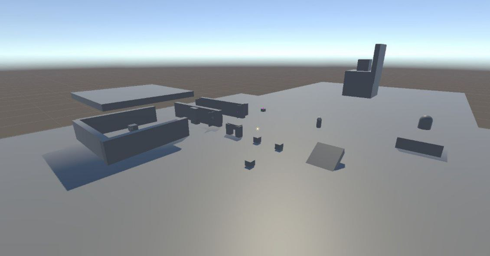
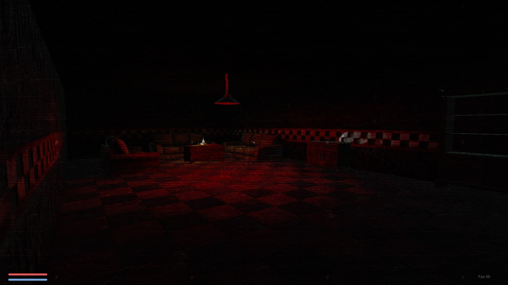
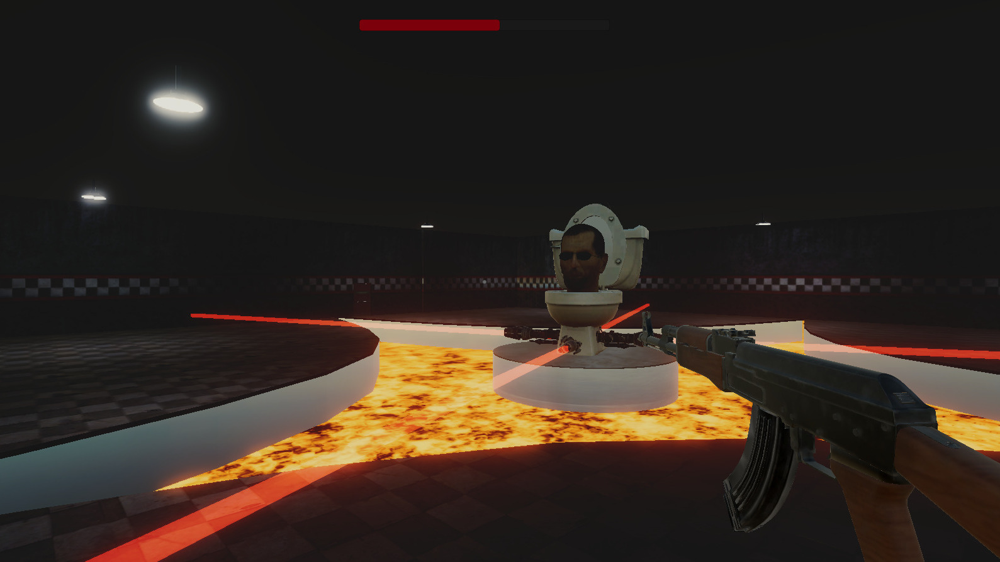

Профессия: Программист игровой механики
Что делает?: занимается созданием всех механик игры. Например: стрельба из автомата, взаимодействие с различными объектами, управление персонажем
Роль в моем проекте: Как и следует, изначально я начал прописывать все механики игры. На этом этапе не было ни моделей, ни текстур. Тут были реализованы скрипты для открытия дверей в зависимости от позиции персонажа, для взаимодействия с оружием и множество других. Общее количество строк в скриптах, написанных на этои этапе, составило больше 7тысяч.
Сцена, на которой отрабатывались большинство механик игры
Профессия: Game Designer
Что делает?: работает над внешним видом игровых локаций и балансом игры. Это одна из самых важных ролей в игровой индустрии.
Роль в моем проекте: Распределение мешей, запекание освещения, постобработка, и подключение уже имеющихся скриптов на новой локации - заняло не меньше двух недели. Но именно на этом этапе появился облик игры.
Настроенная локация
Профессия: Программист AI
Что делает?: Создает исскуственный интелект. Например заставляет персонажа атаковать главного героя или скрываться от него
Роль в моем проекте: По задумке в последних этапах моей игры должны были быть различные битвы, перестрелки и т.д. Для этого всего мне пришлось написать ботов, а так же босса.
Бой с боссом
Профессия: UI Дизайнер
Что делает?: UI Дизайнеры - это люди занимающиеся рисовкой различных элементов интерфейса.
Роль в моем проекте: Я не художник, но мне пришлось самому рисовать UI для игры. На этом этапе разработки я потерял больше всего нерв, но на этом этапе у игры появились записки, которые помогают раскрыть лор.

Один из примеров UI в игре
Конец разработки
От начала разработки игры и до ее релиза в Яндекс игры прошел 81 день
Если вас заинтересовал наш проект, то можете поиграть в него, нажав на этот текст. Хоть игра и кросс-платформеная, но лучше пробуйте ее на десктопных устройствах